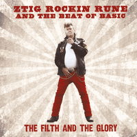

Ztig Rockin Rune and the Beat Of Basic - The Filth And The Glory (Album, 2014)
01 - Miss Lisbeth (3:45)
02 - Rockabilly Rules (2:10)
03 - Speed of the Sound of Loneliness (4:22)
04 - In Love with Sam (3:15)
05 - Wildest Cat in Town (1:54)
06 - Merethe (3:28)
07 - Rocker to the Bone (2:06)
08 - I'm Blue (3:20)
09 - Lill Mona (4:26)
10 - Veteran Teddyboy Rock'n'Roll (1:48)
11 - Mental Paranoid Rockabilly Fuck Up (2:53)
12 - Dead Drunk Again (3:58)
13 - Rocking With The Teds (2:24)
14 - Where Tears Are Not Allowed (2:59)
© Reiten Records :: [ZRR 01 2014]
Notes
Norway.
I did not manage to have physical CD with these records and my experience is based on Digital release [NASTY-82, 2017] (that is likely close to original release). Thanks to Nasty Music for the ability to buy it via all these modern digital channels. And, as a result, hear this tune!
All tracks were labeled by "feat. Teencats". Teencats are a Norwegian teddyboy rockabilly band where Stig Rune Reiten was a leader. They recently reunited as part of their comeback in 2017. And what is even more pleasant - with mentions of an upcoming album release.
reference information: Discogs®
Review
091/366 (Project 366)
The album is lightning fast, even though most of tracks are pretty long and some are full of bright tenderness. Swiftly, hearty, exciting! Songs also with a magnificent shade, almost like a majestic lightning. Themes are all about Teddyboy package: from girls, womans and lovely feelings to wholly drinking roll! With some wild and strong Rockabilly stylish tracks, of course. "The Filth And The Glory" even featured an acoustic inmost story. Well, it is close to Teddy Boy rockers!
The album starts with an interesting musical composition "Miss Lisbeth". This is a dashing start with catchy singing and unstrained music arrangement. Melodiously, still rockin' and with smooth female backing vocals. A thrilling concept, but a bit lingering (sensations go into the background). Perhaps this is a kind of reference to the famous Teencats hit "Elizabeth". However "Miss Lisbeth" is not so quirky one. And not so furious how the second track is. "Rockabilly Rules" is a quite crazy and with pushy mood. It does not get bored. Not to mention that Rockabilly really rules! The third track "The Speed of the Sound of Loneliness" is a cover version of John Prine's composition. Original version was with expressed country rhythm and with affectionate folk sound. So, this track is also lyrically mild. A fine turning to a relatively gentle sound after the hottest tune of "Rockabilly Rules". Song sounds with a slightly pensive mood and even with a pop accord. Backing with a female voice is especially relevant there!
The fourth track is "In Love with Sam" and it is so marvelous! A lot of streams, waves and fun. But, by the way, this is a lyrically themed song! Catchy chorus and various motives in the tune - lovely Rock'N'Roll. Very rhythmic, very groovy, very hard-bitten but lovingly. Following "Wildest Cat In Town" is a real whirlwind. Feral sound, torn motion, entertaining tune. The song grabs attention and then pulls into a rhythm! Only a very exalted sensation remains. That is a pretty stunt! This is a cover version of Crazy Cavan song. Cool choice for Teddy Boy rock and roll. Crazy Cavan and the Rhythm Rockers are a fairly legendary band.
I would like to call sixth track "Merethe" a bit serenade. Although there is quite a peppy motive in addition to a strong rhythm with a melodious tune. "Rocker to the Bone" is a saucy Teddy Boy Rock'N'Roll. Indeed rockers mood with Rockabilly spice. Mighty enough. And it is especially tasty before further more soft powered song "I'm Blue". This is one more fast tempo track despite its fairy atmoshpere with catchy dreamy solos. Touching "Lill Mona" with ballading rock tune. So sweety.. ehm! So Glamy and Hard Rock stage tuned. Tenth track "Veteran Teddyboy Rock'n Roll" is as hot as can be! Well, I think Teds should be happy of such sound. Yeah, rockin' to the rhythm... boppin' to the beat. And to blare around after hearing this roaring yell! Pretty and powerfully. "Mental Paranoid Rockabilly Fuck Up"? Psycho stroll! Pertness with a hangover. Rocking steel of "Dead Drunk Again" with a continuation of swaying sound. Thirteenth track "Rocking With The Teds" is my favourite!
Classy Teddy Boy Rock'N'Roll with Rockabilly flavour. Full of rock, fullness of roll. Remain good impressions with a certain mood. Although a rather tragic, sad ending to the album in acoustic ballad style; "Where Tears Are Not Allowed" was not a "happy ending", but actually it is a happy continuation (since of Teencats comeback). In addition, such a ballad does not break the picture and does not ruin the impression of the album, as it is rather intimate... and this is so appropriate in real creation.
I thought it might be a bit of a museum, but actually this sound is work of art! Rocking explosion from rocker who is still in the saddle! Here is a good deed with energy, power, tireless might and full of drive. It is also possible to hear sensual and light compositions. Twevlve songs are self-penned and only two covers.